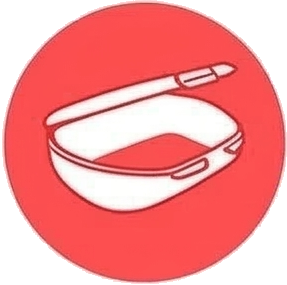
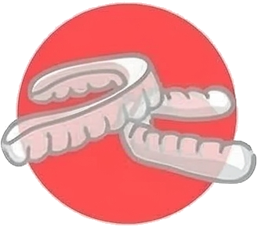
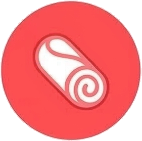
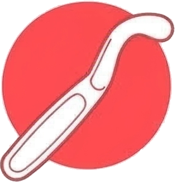
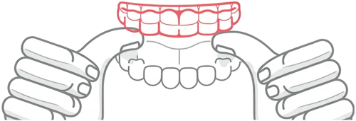
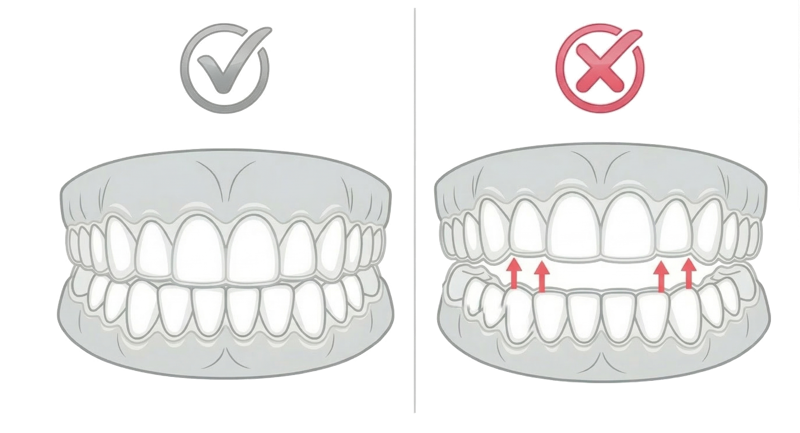
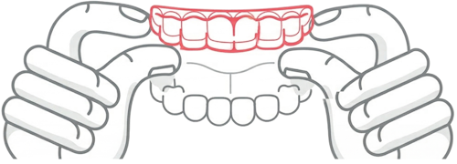

החיוך שלך מתחיל כאן
הקשתיות השקופות של pyoor כבר אצלכם בידיים. הנה כל מה שצריך לדעת כדי לעבור את התהליך בכיף ולהגיע לתוצאה מושלמת.
מה במארז שלך?

קופסת פלסטיק: הבית של הקשתיות. הקפידו לאחסן אותן שם כשהן לא בפה.
שקיות ממוספרות: כל שקית מסודרת לפי סדר הטיפול (1 והלאה). שקית RETAINERS: מסומנת ב-X - אלו המשמרים לסיום הטיפול בלבד.
שקית RETAINERS: מסומנת ב-X - אלו המשמרים לסיום הטיפול בלבד.
CHEWY (נשכן): גליל סיליקון שמסייע בהצמדת הקשתיות לשיניים.
מסיר קשתיות: מתחילים מהשיניים הטוחנות (האחוריות ביותר). אל תנסו לשלוף מהשיניים הקדמיות קודם – זה עלול לעקם או לסדוק את הפלסטיק של הקשתית. הכניסו את הוו של המכשיר בין הקשתית לשן בצד הפנימי (הצד שקרוב ללשון או לחך).
הנחיות שימוש
חשוב: שטפו את הידיים במים וסבון לפני הכנסת הקשתיות.
איך מכניסים?
הניחו את הקשתית מעל השיניים הקדמיות. לאחר מכן, הפעילו לחץ שווה בעזרת קצות האצבעות על השיניים האחוריות עד שהקשתית מחליקה למקומה.

עם המעבר לקשתיות חדשות, ייתכן שיופיע רווח קטן בין הקשתית לשיניים. כדי להבטיח התאמה מקסימלית ותהליך יישור אפקטיבי, יש לפעול לפי ההנחיות הבאות:
- ב-24 השעות הראשונות: יש להשתמש בנשכן (Chewy) המצורף למארז, או בפיסת צמר גפן. יש לנשוך את האביזר בין הקשתיות למשך 3 שעות במצטבר לאורך היום.
- בהמשך הדרך: במידת הצורך, מומלץ לחזור על הפעולה במהלך שלושת הימים הראשונים להחלפת הקשתית.

איך מסירים?
השתמשו בקצות האצבעות בלבד. התחילו מהצד הפנימי של השיניים האחוריות, שחררו צד אחד ואז את השני.

תחושות והסתגלות
בפעם הראשונה יתכן ותיווצר תחושה של אי נוחות מסוימת, לחץ קל או פער קטן בין הקשתית לשיניים. זה טבעי לחלוטין!
- לחץ משתנה: הלחץ משתנה מסט לסט כי כל אחד מהם מבצע תנועה עדינה אחרת. התחושה נעלמת מהר מאוד.
- הצטברות רוק: יתכן ותחושו הצטברות רוק בימים הראשונים - תחושה זו תעבור במהרה.
- כאב חד: במידה וחשתם כאב חד או אי נוחות משמעותית, יש ליצור קשר עם הצוות שלנו או הרופא המטפל מיידית.
היגיינה ותחזוקה
איך מנקים?
- שטפו במים פושרים וסבון נוזלי עדין וצחצחו בעדינות עם מברשת רכה.
- השריה עמוקה: ניתן להשרות בתמיסה ייעודית או בטבליות לשיניים תותבות (15-20 דקות), ולאחר מכן לשטוף היטב.
הקפידו על ביקורת קבועה אצל רופא השיניים וביקור תקופתי אצל השיננית להסרת אבנית ופלאק.
דגשים ואזהרות
- רק מים: הקפידו על שתיית מים בלבד (לא קרים מדי). כל משקה אחר עלול להזיק.
- עישון ומסטיק: אין לעשן או ללעוס מסטיק בזמן הלבישה.
- חום: הגנו על הקשתיות משמש ישירה או מכל מקור חום אחר.
- בטיחות: שמרו את הקשתיות מאוחסנות בבטחה, הרחק מילדים או בעלי חיים.
- אלרגיות: במקרים נדירים עלולה להתפתח אלרגיה לפלסטיק. אם זה קורה, הפסיקו שימוש ופנו לרופא מייד.
שומרים על התוצאה
לסיום: מה מחכה לכם בסוף הדרך? (שלב הריטיינרים)
אולי ראיתם במארז שלכם כמה שקיות שנראות קצת אחרת. אלו הם הריטיינרים (בעברית: סדי קיבוע).
איך מזהים אותם? הריטיינרים נראים כמעט בדיוק כמו קשתיות הטיפול, אבל הם מסומנים באופן בולט כדי שלא תתבלבלו: הם מסומנים באות R או X.
מה עושים איתם עכשיו?
כלום! כרגע הם רק מחכים לכם במארז. אל תפתחו ואל תשתמשו בהם עד שננחה אתכם שהגעתם לרגע המיוחל.
אל דאגה: ברגע שתסיימו את הקשתית האחרונה של הטיפול, אנחנו נשלח לכם מדריך נפרד ומפורט שיסביר בדיוק איך להשתמש בריטיינרים, איך לנקות אותם ואיך לשמור על התוצאה.
18-21 שעות ביום
12 שעות (בלילה)
שמרו על קשר!
(אנחנו בטוח נשמור איתכם)
שימו לב להודעות מאתנו (מיילים, מסרונים או שיחות). אנחנו מלווים אתכם לאורך כל הדרך כדי לוודא שהכל זורם כמו שצריך.